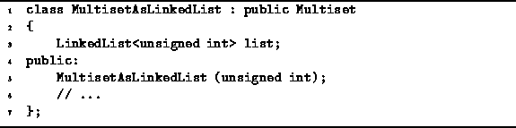

Data Structures and Algorithms
with Object-Oriented Design Patterns in C++
Data Structures and Algorithms
with Object-Oriented Design Patterns in C++The array implementation of multisets is really only practical if the number of items in the universe, N=|U|, is not too large. If N is large, then it is impractical, or at least extremely inefficient, to use an array of N counters to represent the multiset. This is especially so if the number of elements in the multisets is significantly less than N.
If we use a linked list of elements to represent a multiset S,
the space required is proportional to the size of the multiset, |S|.
When the size of the multiset is significantly less than
the size of the universe,  ,
it is more efficient in terms of both time and space to use a linked list.
,
it is more efficient in terms of both time and space to use a linked list.
Program  gives the declaration
of the MultisetAsLinkedList class.
The MultisetAsLinkedList class is a concrete class derived
from the abstract base class Multiset.
In this case a linked list of unsigned ints
is used to record the contents of the multiset.
gives the declaration
of the MultisetAsLinkedList class.
The MultisetAsLinkedList class is a concrete class derived
from the abstract base class Multiset.
In this case a linked list of unsigned ints
is used to record the contents of the multiset.
How should the elements of the multiset be stored in the list? Perhaps the simplest way is to store the elements in the list in no particular order. Doing so makes the Insert operation efficient--it can be done in constant time. Furthermore, the IsMember and Withdraw operations both take O(n) time, where n is the number of items in the multiset, regardless of the order of the items in the linked list.
Consider now the union, intersection, and difference of two multisets, say S and T. If the linked list is unordered, the worst case running time for the union operation is O(m+n), where m=|S| and n=|T|. Unfortunately, intersection and difference are both O(mn).
If, on the other hand, we use an ordered linked list, union, intersection, and difference can all be done in O(m+n) time. The trade-off is that the insertion becomes an O(n) operation rather than a O(1). The MultisetAsLinkedList implementation presented in this section records the elements of the multiset in an ordered linked list.

Program: MultisetAsLinkedList Class Definition
 Copyright © 1997 by Bruno R. Preiss, P.Eng. All rights reserved.
Copyright © 1997 by Bruno R. Preiss, P.Eng. All rights reserved.